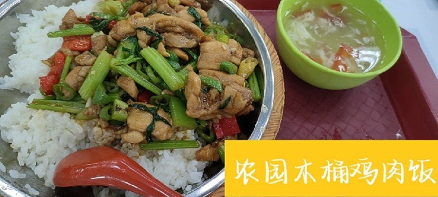
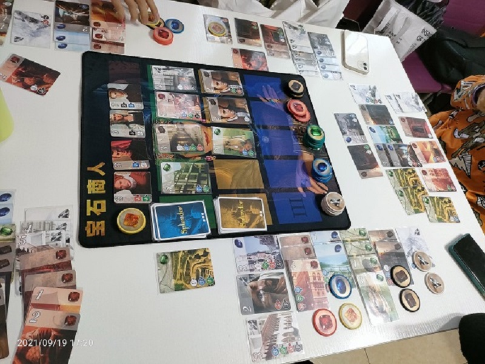

body background="1.jpg"
我的爱豆
 如图是我的爱豆
左边的叫宋亚轩，是一个笑起来很甜，很治愈的十七岁男孩。他的歌声很迷人，小时候是清脆的少女音，现在是低沉的慵懒音，无论哪一个都让作为声控的我欲罢不能（嘻嘻）。和他天然无公害的外表相对的，是他内心深处一颗柔软又有趣的灵魂。在他的小世界里，总是很干净很纯真，橘子会是先生，芒果也可以成为兄弟；月亮是可以借的，雾能说话，遥控器也会冷；星星蓄满的摇篮里，总会挂着他的温柔和细节。就像他说的：“宋亚轩会一直是宋亚轩。”
右边的是刘耀文，是一个天生勇敢，努力上进的十六岁男孩。帅气的外表，磁性的嗓音，两年内暴风成长，默默忍受了生长痛，十四岁便成功达到一米八。在这里夹带一下私货，安利一下他的原创歌曲《Got You》！磁性的嗓音结合迷幻的trap风格，编织出专属的缱绻氛围，温暖的soft pad和听感轻松的pluck完美适配，加上满分律动的trap beats，点缀略带摇晃感的e-piano，不经意间流露的浪漫，是只属于歌者和听众的甜蜜派对！就像他说的：“你可以永远相信刘耀文。”
如图是我的爱豆
左边的叫宋亚轩，是一个笑起来很甜，很治愈的十七岁男孩。他的歌声很迷人，小时候是清脆的少女音，现在是低沉的慵懒音，无论哪一个都让作为声控的我欲罢不能（嘻嘻）。和他天然无公害的外表相对的，是他内心深处一颗柔软又有趣的灵魂。在他的小世界里，总是很干净很纯真，橘子会是先生，芒果也可以成为兄弟；月亮是可以借的，雾能说话，遥控器也会冷；星星蓄满的摇篮里，总会挂着他的温柔和细节。就像他说的：“宋亚轩会一直是宋亚轩。”
右边的是刘耀文，是一个天生勇敢，努力上进的十六岁男孩。帅气的外表，磁性的嗓音，两年内暴风成长，默默忍受了生长痛，十四岁便成功达到一米八。在这里夹带一下私货，安利一下他的原创歌曲《Got You》！磁性的嗓音结合迷幻的trap风格，编织出专属的缱绻氛围，温暖的soft pad和听感轻松的pluck完美适配，加上满分律动的trap beats，点缀略带摇晃感的e-piano，不经意间流露的浪漫，是只属于歌者和听众的甜蜜派对！就像他说的：“你可以永远相信刘耀文。”
我的星座
我是一个很相信星座的人，但是直到今年我才知道星座也分为很多种。我的太阳星座是摩羯座，月亮星座是双鱼座，上升星座是白羊座……
一般而言，我们说的星座是太阳星座。以我为例，我就是很典型的一只摩羯：不善言辞但贵在够真，所有的喜怒哀乐都写在脸上；个性略为强势，具有高度的责任感；外柔内刚；很慢热；喜欢自由；倔强是本性，伪装是天生；性格多变……再说下去恐怕说到天黑也说不完（尽管敲这段字时已经天黑了）。
我的生活
绝大部分幸福感来源——美食

娱乐版块
我超级喜欢玩剧本杀、桌游、密室逃脱、KTV、追剧、看综艺、追星，它们几乎填满了我整个课余生活！最重要的是，我有一群一起玩耍的好朋友！喜乐有分享，共度日月长~

完结撒花~